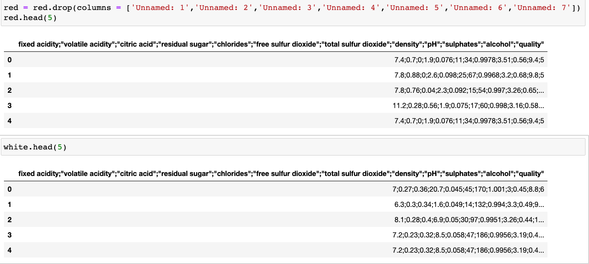
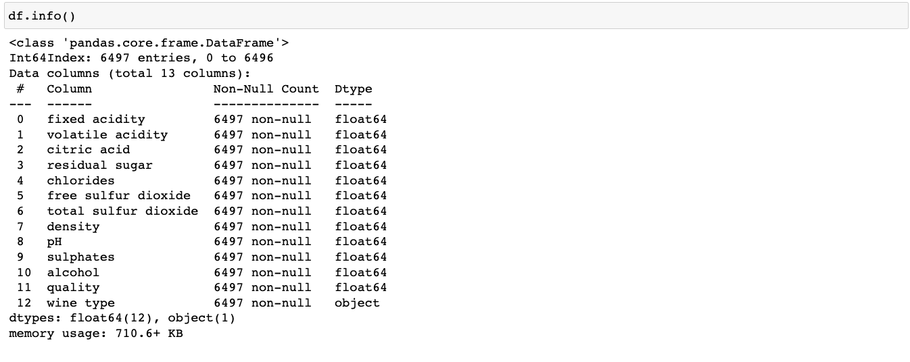
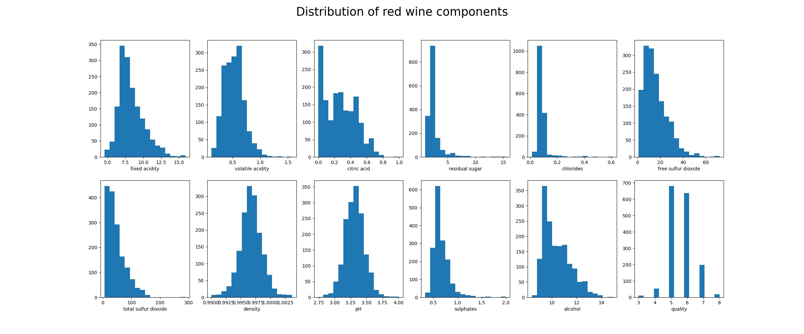
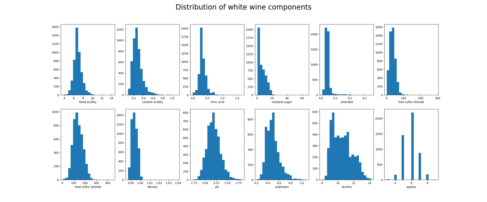
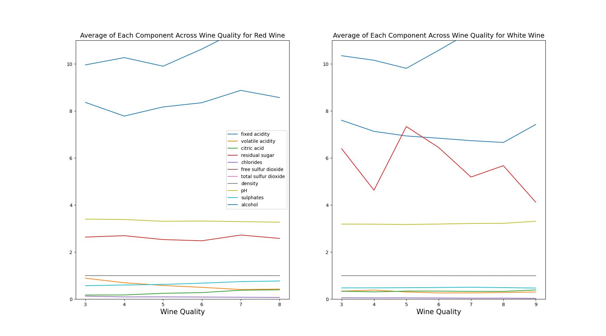
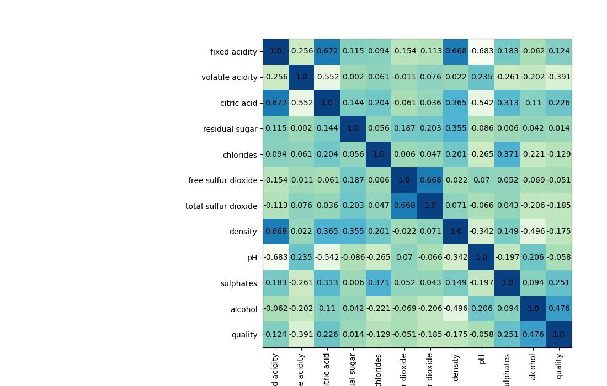
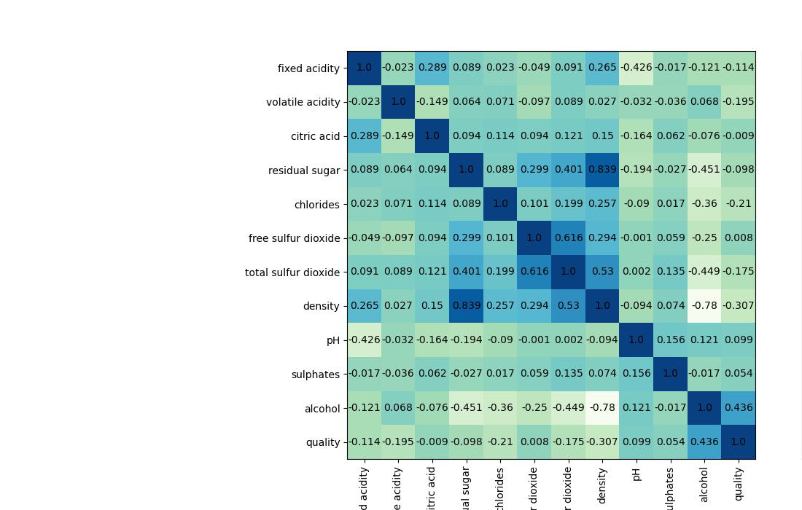
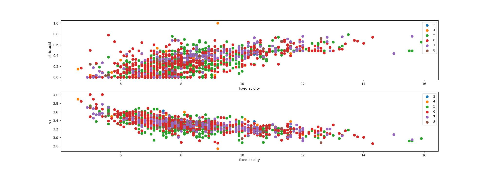
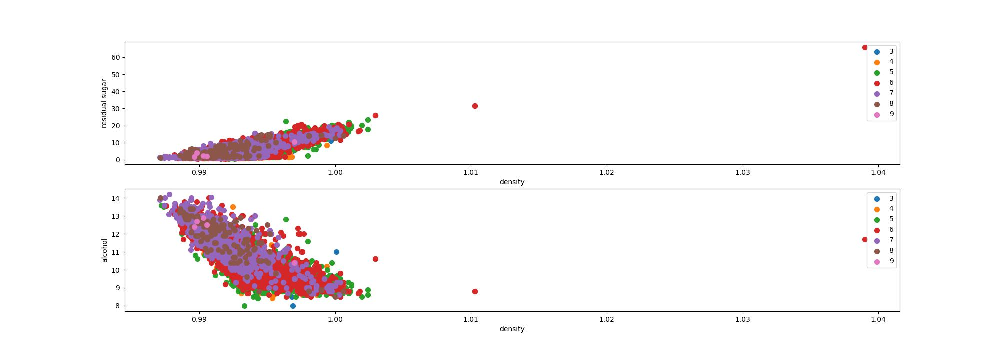
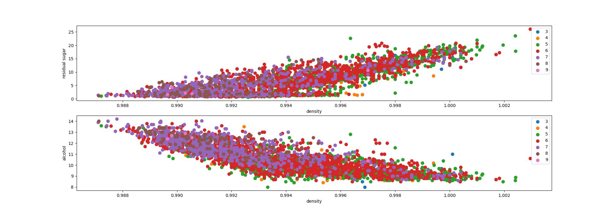

About the dataset
This wine dataset is from UCI machine learning repository. The data contains information about the main components used for making red and white wine. The purpose for this analysis is to visualize the difference of the components used betweeen red and white wine and how they are categorized into levels of quality based on the amount of each component. In this analysis, Python programming language will be used along with packages and API tool, NumPy, Pandas, Scikit-Learn and Matplotlib, to visualize and build a model that can predict the data quality using all the components as the predictors.
Data Information
The components will include:- Fixed acidity: g(tartaric acid)/dm^3
- Volatile acidity: g(tartaric acid)/dm^3
- Citric acid: g/dm^3
- Residual sugar: g/dm^3
- Chlorides: g(sodium chloride)/dm^3
- Free sulfur dioxide: mg/dm^3
- Total sulfur dioxide: mg/dm^3
- Density: g/cm^3
- pH
- Sulphates: g(potassium sulphate)/dm^3
- Alcohol: % by Volume
- Quality
I. Importing Data
There are two seperate datasets, one is for red wine and one is for white wine that are downloaded directly from UCI ML repository website. We can notice that they are not well formatted with columns are grouped into one single column, so we need to clean up before proceeding further.
II. Formatting and Fix data type
The one column is seperated into columns for each wine component variable. The datatype is changed from
string to int for quality column and float for others to make sure there aren't any
errors when performing calculations later down the line. After that, two datasets are merged into one table.
The data's information about null values and data types after fixing. The final table contains no null values with the total of 11 variables for wine components, 1 variable for quality, and wine type containing indicating red or white wine.
III. Exploratory Data Analysis (EDA)
Histogram for components' distribution
 The significantly different components between red and white wine are citric acid, total sulfur dioxide,
and density
Let's have a better look at average of each component between both types of wine!
Here is the average of each component across the quality betwen red and white wine. Total sulfur dioxide amount in both red and white are similar. For red wine, it reaches the the highest at quality level 5 and the lowest level for white wine.
We see some interesting trends here as red wines contain higher amount of alcohol and fixed acidity.
The closer look of the plot shows the trend of a higher average residual sugar in white than in red wine. Moreover, the amount of sulphates is slightly higher in red wine.
Here are the red and white wine correllation plot showing the correllation betweeen each pair of components.
 For red wine, the highest correllation scores are fixed acidity and citric acid, density and fixed acidity, and a negative relationship is between fixed acidity and pH.
For white wine, there exists a positive high correllation between density and residual sugar and a negative high correllation between alcohol and density.
Here is scatter plot showing the relationship betweeen fixed acidity with pH and citric acid categorized by levels of quality.
We can notice the linearly correllated trend betweeen each pair. All of the levels seem to spread along the regression lines despite the outliers of level 5 and 7 at the higher amount of fixed acidity and the level 4 and 6 at the lower end.
And here is for the white wine components
It appears to have the extreme outlier of level 6 with a very high amount of density, so those need to be removed
After removing outliers, the relationship shows a clear trend between each pair. Similarly to red wine, all of the levels spread among the lines, and white wine that is at quality level 6 also has very high amount of density.